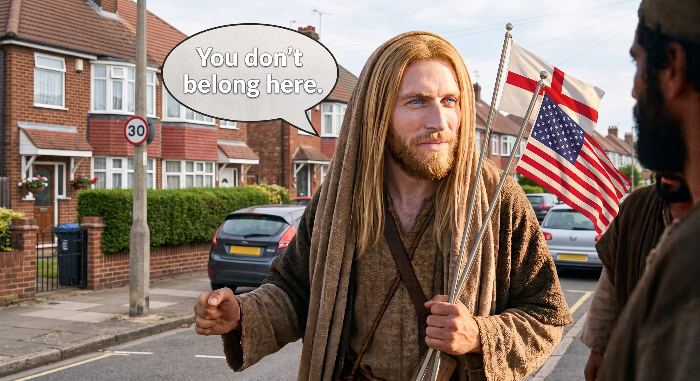
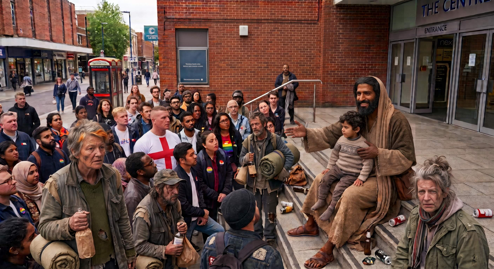

He's got white skin, blonde hair, blue eyes and seems to be using a religion all about peace & love to promote and justify racism, hatred, violence and White Christian Nationalism...
That's My Jesus!

He's got dark skin, dark hair and dark eyes and is telling everyone to love one another no matter what they look like, where they're from or who they themselves
love.